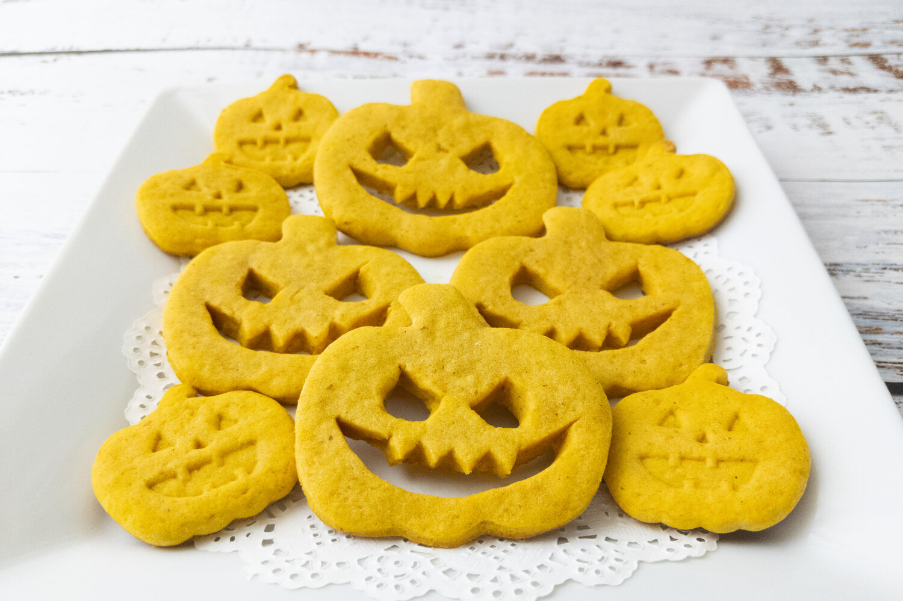

Back to Index
Pumpkin Cookies
A recipe created by Lemon Drop from A Receipe Reborn

“A devilish─though, admittedly, industrious─imp is thought to have made this slightly burnt biscuit shaped like a pumpkin head. One can only wonder what ingredients it contains, but as the people of Eorzea have been consuming these for years now with no ill effects beyond mild disappointment, they’re probably not too horrific.”
Ingredients
Unsalted butter, softened - 1/2 cup
All-purpose flour - 2 + 1/2 cups
Steps:
1.) In a large bowl combine the butter, sugar, cinnamon, salt, pumpkin and egg.
2.) Add the cornstarch and the flour and stir to combine until the dough pulls away from the bowl and forms a ball.
3.) Cut the dough in half, shape it into discs and chill them for 30 minutes.
4.) Roll out the dough between two pieces of parchment paper.
5.) Cut out the shapes using a cookie cutter and/or a sharp knife.
6.) Preheat the oven to 375°F/190°C.
7.) Chill the cut dough in the refrigerator for 15 minutes.
8.) Bake the cut dough on a parchment paper lined pan for 5 minutes, rotate the pans, switch racks and then bake for another 5 minutes.
Back to Index